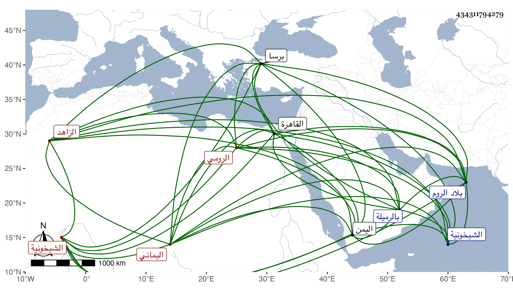

0902Sakhawi.DawLamic.ITO20230111-ara1.EIS1600.434311794279
Biography ID: 434311794279
أحمد بن إبراهيم بن محمد بن عبد الله بن عرب الشهاب أبو العباس اليماني الأصل الرومي الزاهد نزيل الشيخونية ويعرف بابن عرب أصله من اليمن ثم انتقل أبوه منها إلى بلاد الروم فسكنها وولد له صاحب الترجمة بها فنشأ بمدينة برصا فكان يقال له ابن عرب على عادة الروم والترك في تسميتهم من لم يكن منهم عربيا وكانت نشأته حسنة على قدم جيد ثم قدم وهو شاب القاهرة وتنزل في القاعة التي استجدها أكمل الدين صوفيا بالشيخونية وقرأ على إمامها خير الدين سليمان بن عبد الله وغيره ونسخ بالأجرة مدة واشتغل ثم انقطع عن الناس فلم يكن يجتمع بأحد بل اختار العزلة مع المواظبة على الجمعة والجماعات ويبكر إلى الجمعة بعد اغتساله لها بالماء البارد شتاء وصيفا ولا يكلم أحدا في ذهابه وإيابه ولا يجترئ أحد على الكلام معه لهيبته ووقاره وأمره في الورع والعبادة إلى الغاية وكان فيما بلغني يراجع الشمس البيجوري الشافعي نزيل الخانقاه الشيخونية فيما يشكل عليه فإذا أوضح له ما أشكل عليه فارقه ولم يكلمه بكلمة بعد ذلك ولذا قيل إنه شافعي المذهب ورأيت بخطى وصفه بالحنفي وما علمت مستندي فيه وكان مع ذلك يدري القراآت واقتصر على اللباس الحقير الزائد الخشونة ولذا يقنع باليسير من القوت وتوزع جدا بحيث أنه لم يكن يقبل من أحد شيئا ومتى علم أن أحدا من الباعة حاباه لكونه عرفه لم يعد إليه وللخوف من ذلك كان يتنكر ويشتري بعد العشاء قوت يومين أو ثلاثة وكان الناس يبيتون بالشيخونية رجاء رؤيته وأقام على هذه الطريقة أكثر من ثلاثين سنة وكراماته كثيرة وكان فريدا فيها لم يكن في عصره من يدانيه في طريقته قال العيني وثبت بالتواتر أنه أقام أكثر من عشرين سنة لا يشرب الماء أصلا وكان يقضي أيامه بالصيام ولياليه بالقيام مات في ليلة الأربعاء ثاني ربيع الأول سنة ثلاثين وتقدم العيني الناس في الصلاة عليه . قال شيخنا ومن عجائب أمره أنه لما مات كان الجمع في جنازته موفورا وأكثر الناس كانوا لا يعلمون بحاله ولا بسيرته فلما تسامعوا بموته هرعوا إليه ونزل السلطان من القلعة فصلى عليه بالرميلة وأعيد إلى الخانقاه فدفن بها بجوار أكمل الدين وحمل نعشه على الأصابع وتنافس الناس في شراء ثياب بدنه واشتروها بأغلى الأثمان فاتفق أن جملة ما اجتمع من ثمنها حسب فكان قدر ما تناوله من المعلوم من أول ما نزل بها إلى أن مات لا يزيد ولا ينقض وعد هذا من كراماته رحمه الله ونفعنا به . وممن ذكره المقريزي في عقوده .
